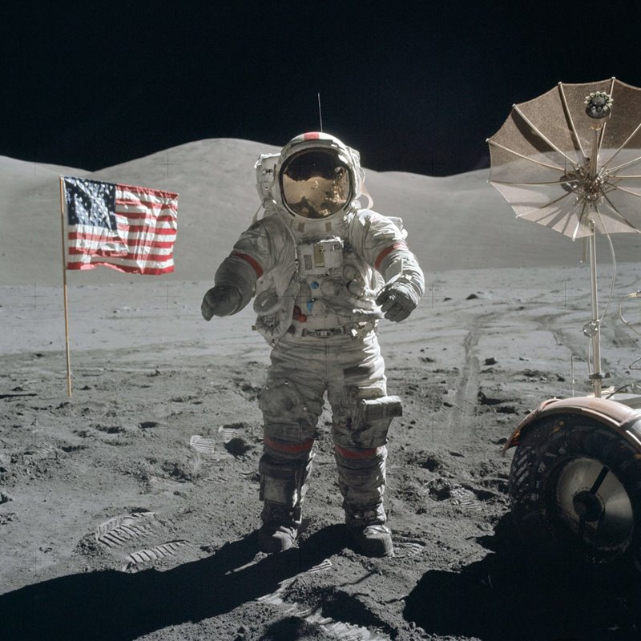

| Año | Acontecimiento | Imagen |
| 1957 | Agencia de Proyectos de Investigaciones avanzadas (ARPA) |
|
| 1969 |
Hombre llega a la luna. Marca el inicio de las comunicaciones globales. |
 |
| ARPA partiendo de las experiencias crea ARPANET |
| 1980 | Protocolo HTML |
 |
| 1989 | Protocolo HTTP |
|
| 1990 |
ARPANET se desmantela y aparecen MILNET Y INTERNET |
 |
| Aparece la web 1.0 |
| 1991 | Tim Berners Lee, crea la Word Wide Web mas conocida como WWW |
|
| 1995 | Sitio web cuyas páginas pueden ser editadas por múltiples voluntarios a través del navegador web |
 |
| 1999 |
Formato que permite que unos programas llamados agregadores presenten el contenido de una página web sin necesidad visitarla |
|
| (CMS): Permite crear un entorno de trabajo para la creación y administración de contenidos |
| 2001 | La web semántica se enfoca en utilizando el entendimiento de información por la máquina para proveer una red semántica |
|
| 2004 | WEB 2.0 Permitúa la unión de grupos globales de personas con intereses similares, ofrecía interacción social |
 |
| 2005 | WEB 3.0 Está basada en la apertura, descentralización y mayor utilidad para el usuario |
 |
| 2015 | Esta generación está marcada por el incremento en uso de redes sociales y móviles. permite para experiencias sociales más personalizadas e interactivas |
|